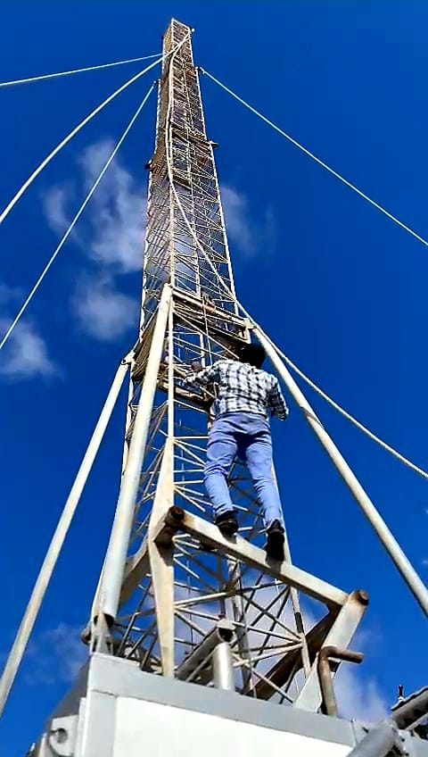
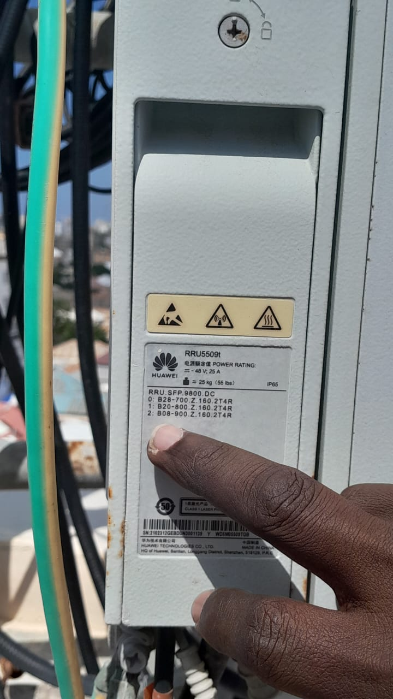
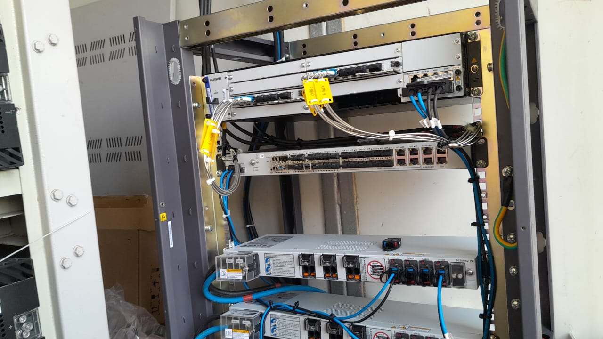
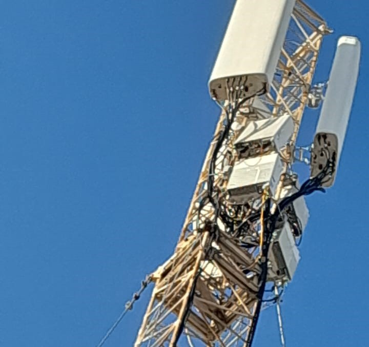
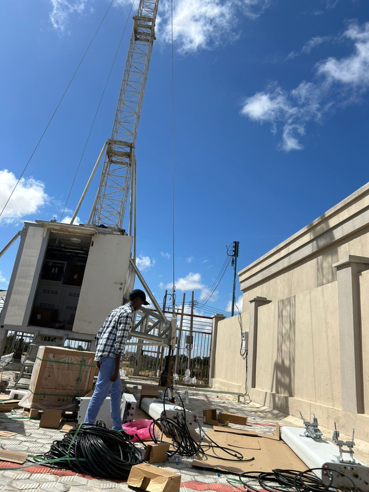

Back to Projects
Telecommunications Field Internship – Hormuud Telecom
Field Engineering Internship • Mobile Network Infrastructure
Overview
This project represents a professional telecommunications field internship at Hormuud Telecom, specifically focused on mobile network infrastructure deployment and site installation. During this period, I gained significant exposure to real telecom environments, rigorous safety procedures, and practical hands-on engineering work essential for maintaining nationwide cellular connectivity.
My Role & Responsibilities
- Assisted in telecom tower installation and site preparation
- Participated in installation of RRU, PPU, and base station equipment
- Supported fiber optic routing, RF cable management, and power connections
- Observed and assisted in cell configuration and site commissioning
- Followed telecom safety and field engineering standards
Field Work Gallery

RRU installation on telecom tower
.jpeg)
Fiber optic cable routing at site

Base station equipment setup

Telecom site chamber and power connections

Antenna alignment verification

Field work assisting

Field work

Field team coordination and site handover